Extraction review - Group 9 (en)
119 questions from group-9-en.pdf - 60 with a picture - 0 with an uncertain picture mapping. The correct option is highlighted in green.
1.PDF page 1 - g9-q001
When approaching a stopped vehicle with a flashing red beacon switched on, drivers of vehicles proceeding in that direction must:
(no picture)
- Stop and continue only after receiving permission.
- Reduce speed so that they can stop immediately if necessary.
- Continue driving.
Answer: 1
2.PDF page 1 - g9-q002
When a vehicle with a flashing blue beacon and a special audible signal activated is approaching, drivers of vehicles must:
(no picture)
- Continue driving.
- Yield to ensure the unobstructed passage of that vehicle.
- Reduce speed and yield to ensure the unobstructed passage of that vehicle.
Answer: 2
3.PDF page 1 - g9-q003
Is it mandatory to have the low-beam headlights switched on during daylight hours on mopeds?
(no picture)
- Mandatory
- Not mandatory
Answer: 1
4.PDF page 1 - g9-q004
In which case do the rules not require a warning signal to be given?
(no picture)
- Before stopping at the edge of the roadway.
- Before a curve in the road within the area of effect of a “Dangerous Turn” sign.
- Before changing to an adjacent traffic lane.
Answer: 2
5.PDF page 1 - g9-q005
Before changing lanes, a warning signal must be given:
(no picture)
- Immediately before beginning the maneuver.
- Immediately after beginning the maneuver.
- In advance, before beginning the maneuver.
Answer: 3
6.PDF page 1 - g9-q006
When performing a maneuver, a warning signal must be given:
(no picture)
- Before changing the direction of traffic.
- While changing the direction of traffic.
- In advance, before changing the direction of traffic.
Answer: 3
7.PDF page 2 - g9-q007
A warning signal given by hand must be discontinued:
(no picture)
- Immediately before beginning the maneuver.
- Immediately after completing the maneuver.
- While performing the maneuver.
Answer: 1
8.PDF page 2 - g9-q008
In which case must the driver give a warning signal before stopping?
(no picture)
- If another vehicle is proceeding behind the driver.
- Only in populated areas.
- In all cases.
Answer: 3
9.PDF page 2 - g9-q009
If forced to stop on a railroad crossing, what general alarm signal must the driver give by repeated horn signals?
(no picture)
- Three long and one short.
- One long and three short.
- One long and two short.
Answer: 2
10.PDF page 2 - g9-q010
If a turn signal is absent or malfunctioning, a warning signal given by hand must be discontinued:
(no picture)
- Immediately before beginning the maneuver.
- Immediately after completing the maneuver.
- While performing the maneuver.
Answer: 1
11.PDF page 2 - g9-q011
The following combination of horn signals constitutes the general alarm signal given at a railroad crossing:
(no picture)
- Two long and two short.
- One long and three short.
- Three long and three short.
- Three long and one short.
Answer: 2
12.PDF page 3 - g9-q012
In which image is the driver giving a left-turn signal?
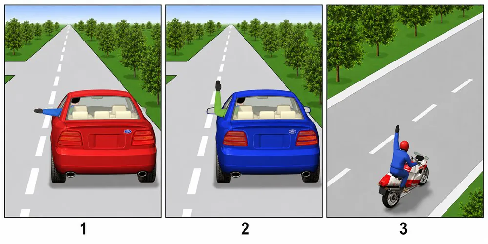
- 1
- 2
- 3
Answer: 1
13.PDF page 3 - g9-q013
When approaching a stationary vehicle with a red flashing beacon activated, drivers proceeding in the same direction must:
(no picture)
- Stop and continue only after receiving permission.
- Reduce speed so that they can stop immediately if necessary.
Answer: 1
14.PDF page 3 - g9-q014
For what purpose are orange or yellow flashing beacons installed on vehicles?
(no picture)
- To obtain right-of-way over other road users.
- To warn other road users of danger.
Answer: 2
15.PDF page 3 - g9-q015
When a vehicle with a blue flashing beacon and a special audible signal activated is approaching, drivers must:
(no picture)
- Yield to ensure the unobstructed passage of that vehicle.
- Reduce speed and yield to ensure the unobstructed passage of that vehicle.
Answer: 1
16.PDF page 4 - g9-q016
The blue automobile will proceed through the intersection:
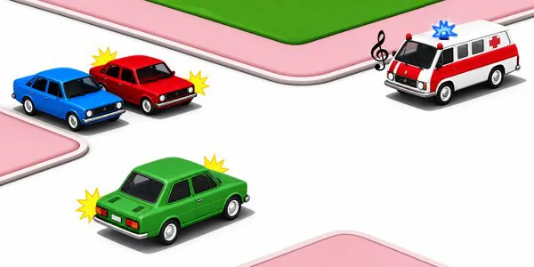
- First, simultaneously with the red automobile.
- Second, simultaneously with the red automobile.
- Third, simultaneously with the red automobile.
Answer: 3
17.PDF page 4 - g9-q017
When a vehicle with blue and red flashing beacons and a special audible signal activated is approaching, drivers must:
(no picture)
- Yield to ensure the unobstructed passage of that vehicle.
- Reduce speed and yield to ensure the unobstructed passage of that vehicle and the vehicles it is escorting.
Answer: 2
18.PDF page 4 - g9-q018
Which vehicle driver has the right-of-way?
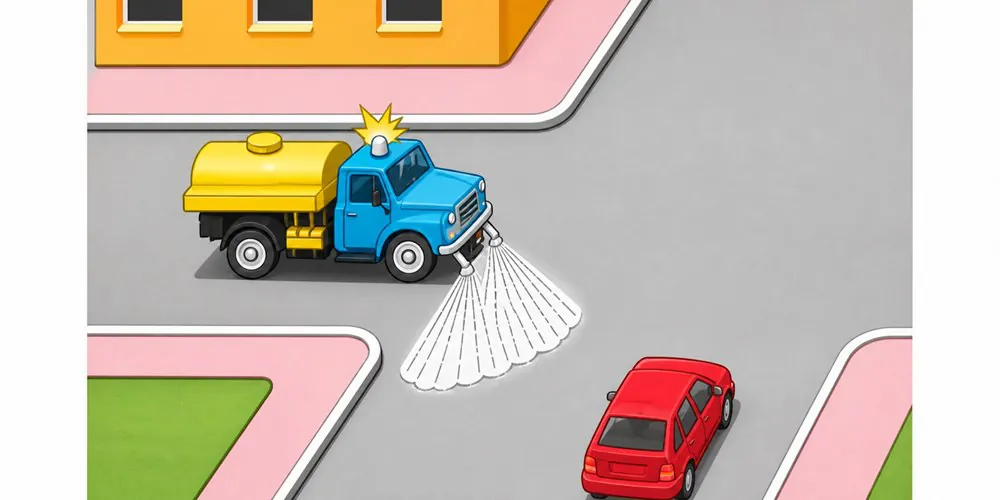
- The driver of the road-cleaning vehicle.
- The passenger-car driver.
Answer: 2
19.PDF page 5 - g9-q019
The black automobile will proceed through the intersection:
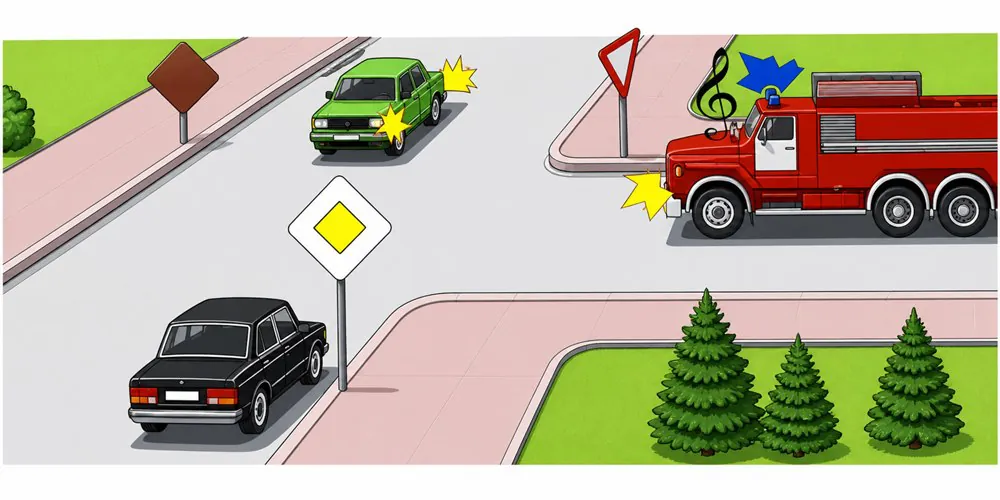
- First.
- Second.
- Last.
Answer: 2
20.PDF page 5 - g9-q020
Which vehicle driver must yield?
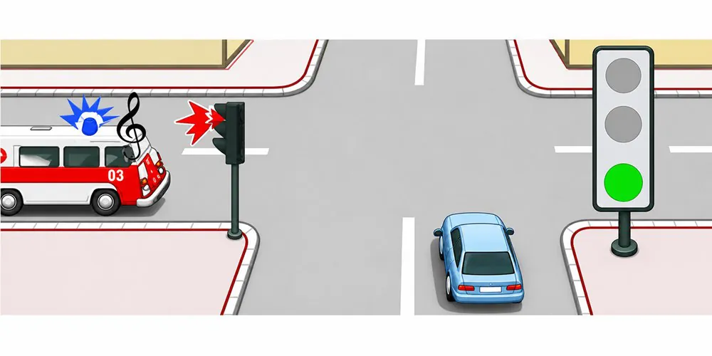
- The ambulance driver.
- The passenger-car driver.
Answer: 2
21.PDF page 6 - g9-q021
The blue automobile will proceed through the intersection:
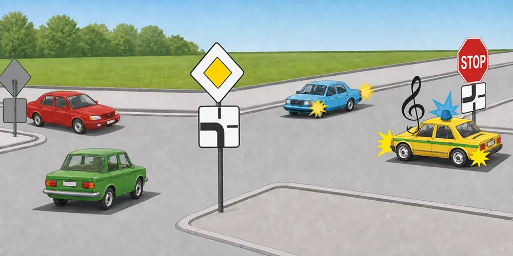
- First.
- Second.
- Third.
- Last.
Answer: 4
22.PDF page 6 - g9-q022
Does an activated yellow (orange) flashing beacon give a vehicle the right-of-way?
(no picture)
- Yes.
- No.
Answer: 2
23.PDF page 6 - g9-q023
The driver of a vehicle with white flashing beacons activated gives a special audible signal in order to:
(no picture)
- Obtain right-of-way over other road users.
- Attract the attention of police officers and other persons.
Answer: 2
24.PDF page 6 - g9-q024
The driver of a vehicle equipped with a blue flashing beacon has the right-of-way over other road users if the driver:
(no picture)
- Has activated the flashing beacon.
- Is giving a special audible signal.
- Has activated the blue flashing beacon and the special audible signal.
Answer: 3
25.PDF page 6 - g9-q025
Within what distance before a railroad crossing is passing prohibited?
(no picture)
- Within 50 m before the crossing.
- Within 100 m before the crossing.
- Within 150 m before the crossing.
Answer: 2
26.PDF page 6 - g9-q026
Is passing vehicles at an intersection permitted when proceeding on a road that is the priority road relative to the intersecting road?
(no picture)
- Permitted.
- Prohibited.
Answer: 2
27.PDF page 7 - g9-q027
Is the passenger-car driver permitted to pass in the indicated situation?
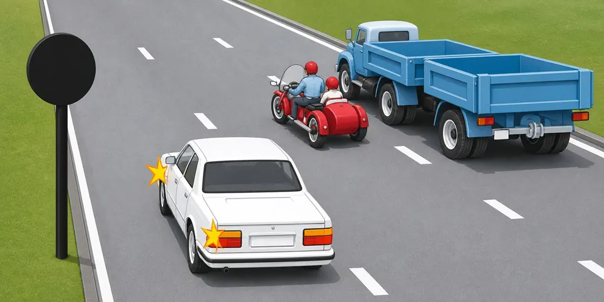
- Permitted.
- Permitted if the motorcycle’s speed does not exceed 30 km/h.
- Prohibited.
Answer: 3
28.PDF page 7 - g9-q028
Passing is prohibited:
(no picture)
- At intersections.
- Within 150 m before railroad crossings.
- In both cases.
Answer: 1
29.PDF page 7 - g9-q029
Passing is prohibited:
(no picture)
- At controlled intersections.
- At uncontrolled intersections.
- In both cases.
Answer: 3
30.PDF page 7 - g9-q030
Is it permitted to pass the road train in this situation if its speed does not exceed 30 km/h?
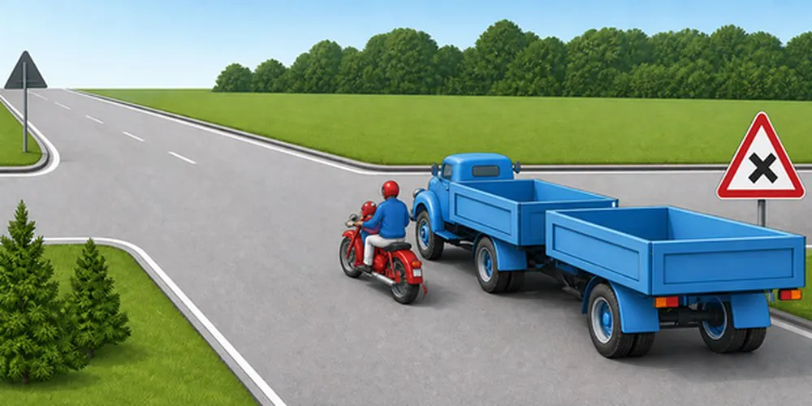
- Prohibited.
- Permitted.
Answer: 1
31.PDF page 8 - g9-q031
Is the driver of the green automobile permitted to pass?
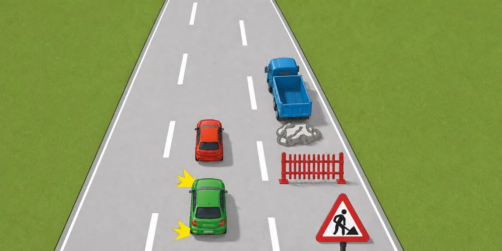
- Permitted.
- Prohibited.
- Permitted if the red automobile is proceeding at a speed below 30 km/h.
Answer: 2
32.PDF page 8 - g9-q032
Is the driver of the red automobile permitted to pass in this situation?
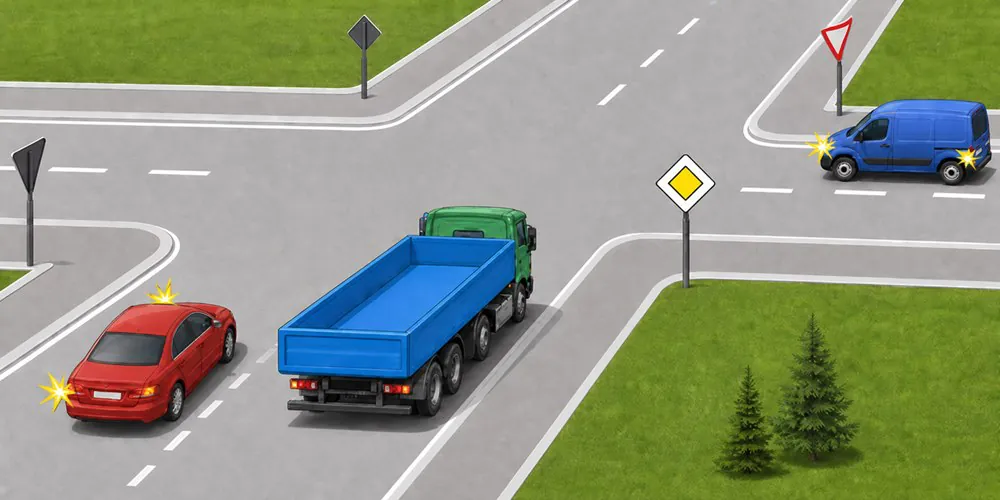
- Permitted.
- Prohibited.
- Permitted if the speed of the automobile being passed does not exceed 30 km/h.
Answer: 2
33.PDF page 9 - g9-q033
Is it permitted to pass the bus at the indicated location?
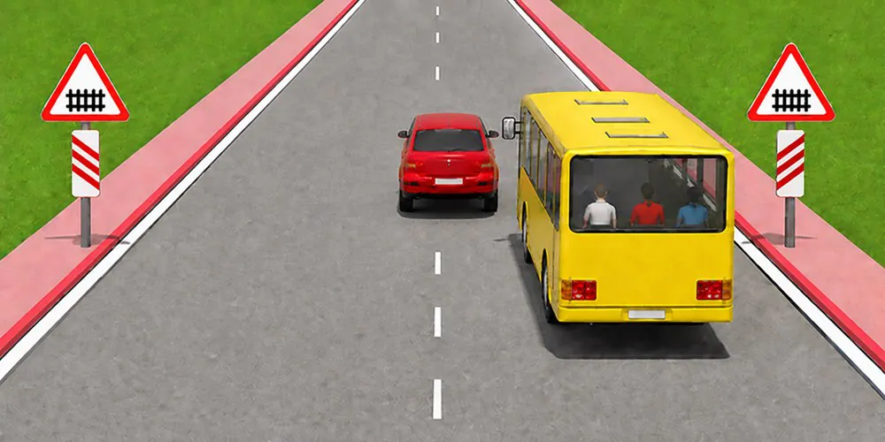
- Permitted.
- Prohibited.
Answer: 1
34.PDF page 9 - g9-q034
Passing vehicles means:
(no picture)
- Proceeding ahead of one or more moving vehicles by leaving the occupied lane and entering the oncoming traffic lane.
- Proceeding ahead of one or more moving vehicles by leaving the occupied lane.
Answer: 2
35.PDF page 9 - g9-q035
At night and under conditions of insufficient visibility, regardless of road lighting, moving motor vehicles must have the following activated:
(no picture)
- High-beam headlights.
- Low-beam headlights.
- High-beam or low-beam headlights.
Answer: 3
36.PDF page 9 - g9-q036
In which case must a motorcycle have its low-beam headlights activated during daylight?
(no picture)
- When proceeding under conditions of insufficient visibility.
- When proceeding to a parking location on a motorcycle with a malfunction.
- In all cases while participating in traffic.
- When carrying an ill passenger.
Answer: 3
37.PDF page 9 - g9-q037
What must the driver do first if dazzled by the headlights of an oncoming vehicle?
(no picture)
- Switch the high-beam headlights (if activated) to low beam.
- Activate the hazard warning lights.
- Give a horn signal consisting of one long and three short signals.
- Give a horn signal consisting of one short and three long signals.
Answer: 2
38.PDF page 10 - g9-q038
Horn signals may be used only:
(no picture)
- In populated areas, to warn other drivers of the intention to pass.
- When necessary to prevent a traffic accident.
- In both cases.
Answer: 2
39.PDF page 10 - g9-q039
At night, on unlit sections of road, a moving motor vehicle must have the following activated:
(no picture)
- High-beam or low-beam headlights.
- Low-beam headlights only.
- High-beam headlights only.
Answer: 1
40.PDF page 10 - g9-q040
Rear fog lights may be used:
(no picture)
- At night when proceeding as part of a convoy.
- When proceeding through tunnels.
- Only under conditions of insufficient visibility.
- At night when unloading a vehicle.
- In all of the listed cases.
Answer: 3
41.PDF page 10 - g9-q041
At what distance from an oncoming vehicle must high-beam headlights be switched to low beam?
(no picture)
- At least 100 m.
- At least 150 m.
- At least 300 m.
Answer: 2
42.PDF page 10 - g9-q042
A searchlight may be used:
(no picture)
- Only outside populated areas when there are no oncoming or preceding vehicles.
- Only under conditions of insufficient visibility.
- Anywhere, when necessary.
- At night on all sections of road.
Answer: 1
43.PDF page 11 - g9-q043
In populated areas, at what distance before the beginning of a hazardous section is this warning sign installed?
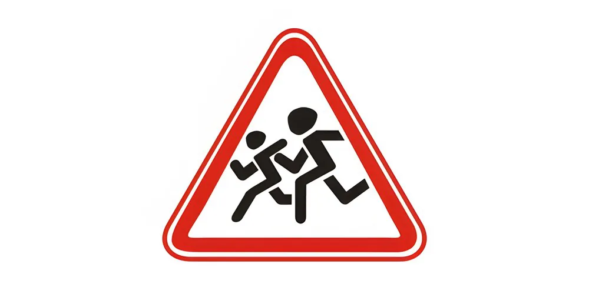
- 25–50 m.
- 50–100 m.
- 100–150 m.
Answer: 2
44.PDF page 11 - g9-q044
Is it permitted to transport agricultural, road-construction, construction, and other machines and mechanisms across a railroad crossing?
(no picture)
- Permitted if the crossing is not equipped with a barrier gate.
- Permitted if they are in a non-transport position.
- Permitted if they are in a transport position.
Answer: 3
45.PDF page 11 - g9-q045
Where is it permitted to cross railroad tracks?
(no picture)
- At locations where visibility in both directions is at least 1,000 m.
- At locations most convenient at the driver’s discretion.
- At locations designated for crossing.
- At least 1,000 m from railroad stations.
Answer: 3
46.PDF page 11 - g9-q046
While performing an official assignment, is it permitted to open or bypass a barrier gate without authorization?
(no picture)
- Prohibited.
- Permitted.
- Permitted at the driver’s discretion if no train is approaching nearby.
- Permitted if the railroad crossing attendant is absent.
Answer: 1
47.PDF page 11 - g9-q047
Is it permitted to transport agricultural, road-construction, construction, and other machines and mechanisms across a railroad crossing?
(no picture)
- Permitted.
- Permitted if they are in a transport position.
- Prohibited.
Answer: 2
48.PDF page 12 - g9-q048
What must the driver follow when approaching a railroad crossing?
(no picture)
- The position of the barrier gate and the traffic signals.
- The requirements of traffic signs and pavement markings.
- The instructions of the railroad crossing attendant.
- All of the listed requirements.
Answer: 4
49.PDF page 12 - g9-q049
Are pedestrians permitted to proceed on a road marked with the “Freeway” sign?
(no picture)
- Prohibited.
- Permitted outside populated areas, against the direction of vehicle traffic.
- Permitted outside populated areas, in the same direction as vehicle traffic.
Answer: 1
50.PDF page 12 - g9-q050
Vehicles whose speed, because of their technical characteristics or condition, does not exceed 40 km/h are:
(no picture)
- Permitted on freeways only in the rightmost lane.
- Prohibited from proceeding on freeways.
- Permitted on freeways if there is no “Minimum Speed Limit” sign.
Answer: 2
51.PDF page 12 - g9-q051
The hazard warning lights on a vehicle must be activated:
(no picture)
- In the event of a traffic accident.
- In the event of a forced stop where stopping is prohibited.
- In both cases.
Answer: 3
52.PDF page 12 - g9-q052
The hazard warning lights on a vehicle must be activated:
(no picture)
- In the event of a traffic accident.
- During towing, on the towed motor vehicle.
- In the event of a forced stop where stopping is prohibited.
- In all of the listed cases.
Answer: 4
53.PDF page 12 - g9-q053
At what distance from the vehicle must the emergency warning triangle be placed?
(no picture)
- At least 15 m in populated areas and at least 30 m outside populated areas.
- At least 10 m in populated areas and at least 20 m outside populated areas.
- At least 5 m in populated areas and at least 10 m outside populated areas.
Answer: 1
54.PDF page 12 - g9-q054
The hazard warning lights on a vehicle must be activated:
(no picture)
- If the driver is dazzled by headlights.
- During towing, on the towed motor vehicle.
- In both cases.
Answer: 3
55.PDF page 13 - g9-q055
The hazard warning lights on a vehicle must be activated:
(no picture)
- In the event of a traffic accident.
- During towing, on the towed motor vehicle.
- In both cases.
Answer: 3
56.PDF page 13 - g9-q056
In developed areas where the entrance and exit are marked by the “Residential Zone” and “End of Residential Zone” traffic signs, the following is not prohibited:
(no picture)
- Pedestrians proceeding on the roadway.
- Through traffic of vehicles.
- Driving instruction.
Answer: 1
57.PDF page 13 - g9-q057
An intersection is considered controlled if the order of traffic is determined by:
(no picture)
- Traffic signals only.
- Traffic controller signals only.
- Either of the above.
Answer: 3
58.PDF page 13 - g9-q058
On an unpaved dirt road, does the presence of a paved section immediately before an intersection make that road equal in priority to the intersecting road?
(no picture)
- No.
- Yes.
Answer: 1
59.PDF page 13 - g9-q059
Which image shows the permitted directions of traffic?
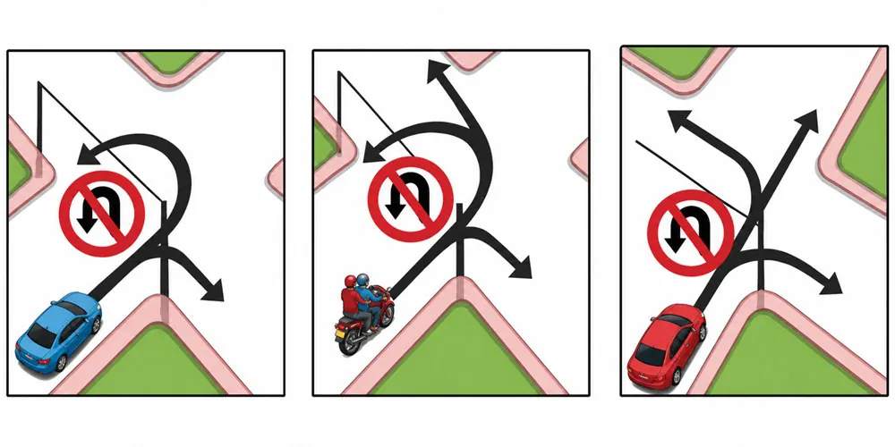
- The left image.
- The center image.
- The right image.
- The center and right images.
Answer: 3
60.PDF page 14 - g9-q060
If the meanings of the traffic signals conflict with the requirements of the priority signs, drivers must follow:
(no picture)
- The requirements of the signs.
- The traffic signals.
Answer: 2
61.PDF page 14 - g9-q061
Is the driver permitted to continue when the yellow traffic signal turns on or the traffic controller raises an arm?
(no picture)
- Prohibited.
- Permitted if the driver cannot stop without sudden braking.
Answer: 2
62.PDF page 14 - g9-q062
A traffic controller gives a whistle signal:
(no picture)
- Only when requiring a vehicle to stop.
- To attract the attention of road users.
Answer: 2
63.PDF page 14 - g9-q063
In this situation, is the road train permitted to proceed across the bridge?
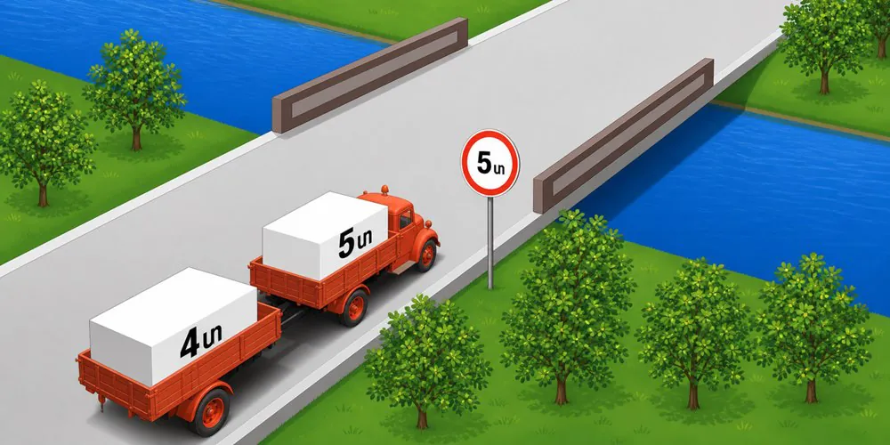
- Permitted.
- Prohibited.
Answer: 2
64.PDF page 15 - g9-q064
May a warning signal be given by hand in order to proceed along the indicated path?
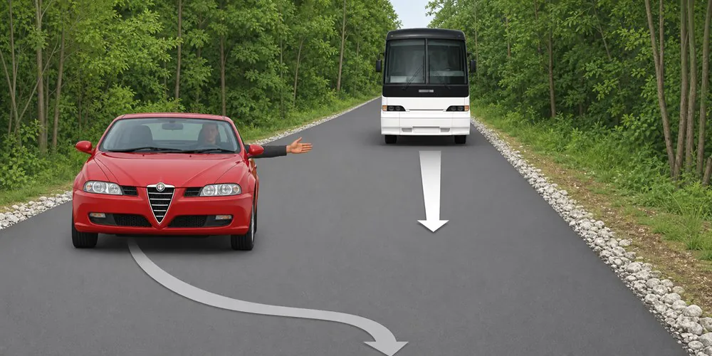
- Yes, if the turn signal is malfunctioning.
- Yes, if the turn signal is malfunctioning during daylight hours.
- Yes, in all cases.
Answer: 1
65.PDF page 15 - g9-q065
Must the driver activate the turn signal before starting to move in a residential zone?
(no picture)
- No.
- Yes.
- Yes, if other vehicles are present.
Answer: 2
66.PDF page 15 - g9-q066
To obtain right-of-way over other road users, the driver of a patrol vehicle must activate:
(no picture)
- The blue flashing beacon.
- The blue and red flashing beacons.
- The blue flashing beacon and the special audible signal.
Answer: 3
67.PDF page 15 - g9-q067
Passing is prohibited:
(no picture)
- At railroad crossings and within 100 m before them.
- At railroad crossings and within 150 m before them.
- At railroad crossings and within 250 m before them.
Answer: 1
68.PDF page 16 - g9-q068
What does the hand signal given by the passenger-car driver indicate?
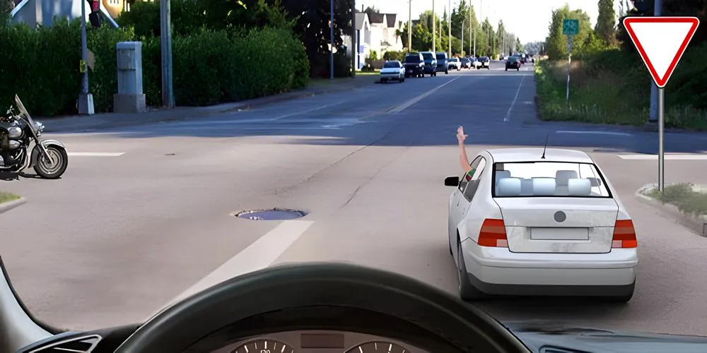
- The driver is making a right turn.
- The driver is continuing straight ahead.
- The driver is braking.
Answer: 3
69.PDF page 16 - g9-q069
The hazard warning lights must be activated:
(no picture)
- Before entering a tunnel.
- In the event of a traffic accident.
- When proceeding as part of an organized convoy.
Answer: 2
70.PDF page 16 - g9-q070
What does the hand signal given by the motorcycle operator indicate?
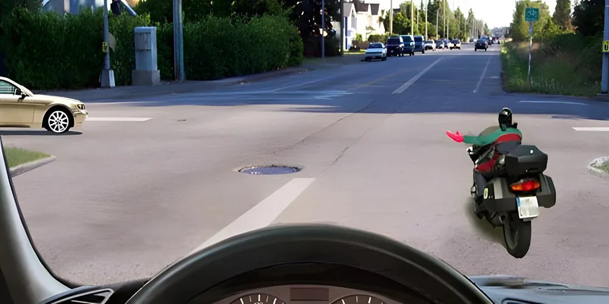
- The motorcycle will proceed to the left or make a U-turn.
- The motorcycle will proceed straight ahead or to the right.
Answer: 1
71.PDF page 17 - g9-q071
What does the hand signal given by the passenger-car driver indicate?
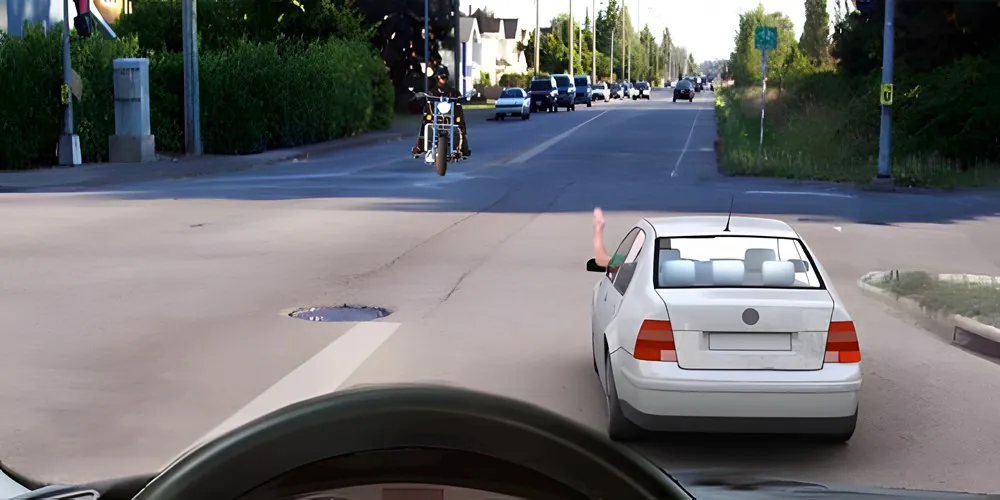
- The driver is making a right turn.
- The driver is continuing straight ahead.
- The driver is braking in order to yield to the motorcycle.
Answer: 1
72.PDF page 17 - g9-q072
What does the hand signal given by the passenger-car driver indicate?
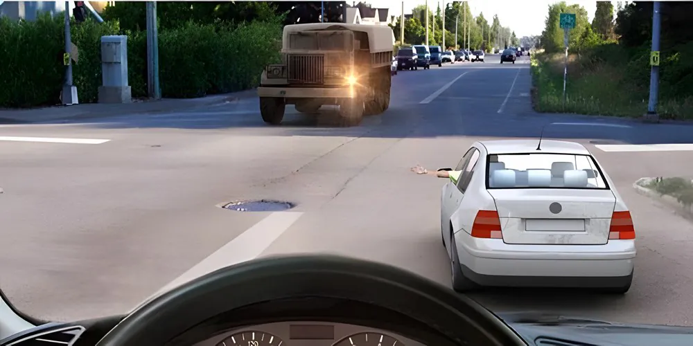
- The driver intends to make a left turn or a U-turn.
- The driver is braking in order to yield to the truck.
Answer: 1
73.PDF page 18 - g9-q073
In this case, must the driver activate the turn signal?
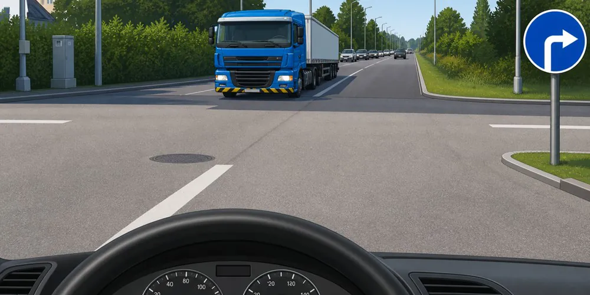
- Yes.
- No.
Answer: 1
74.PDF page 18 - g9-q074
Is the truck driver permitted to pass the bus that is proceeding at a speed of 60 km/h?
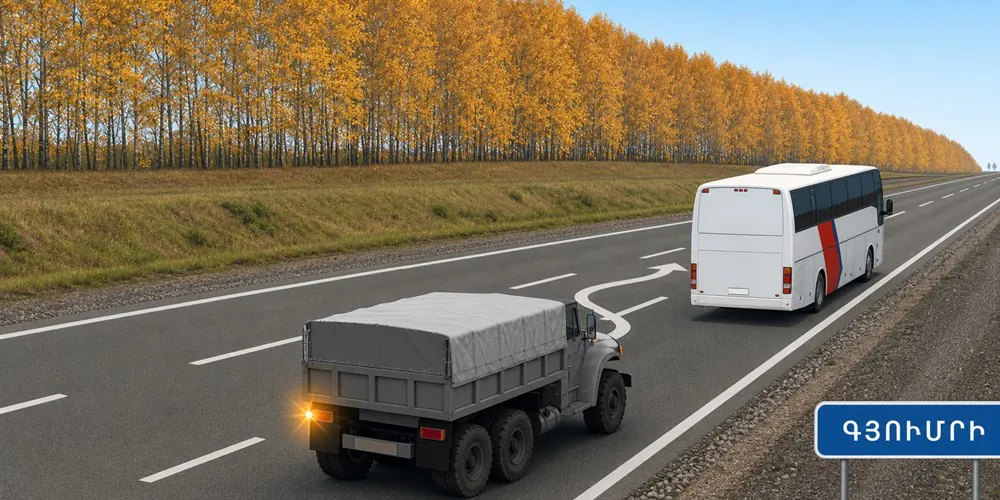
- Prohibited.
- Permitted.
Answer: 2
75.PDF page 19 - g9-q075
Is passing permitted in this situation?
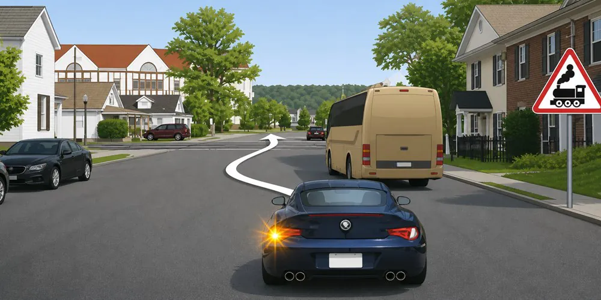
- Prohibited.
- Permitted.
- Permitted if the bus is proceeding at a speed below 30 km/h.
Answer: 1
76.PDF page 19 - g9-q076
Is it permitted to enter the railroad crossing in this situation?
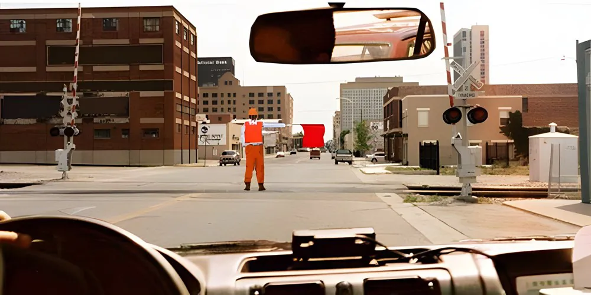
- Permitted.
- Prohibited.
Answer: 2
77.PDF page 20 - g9-q077
Is it permitted to enter the railroad crossing in this situation?
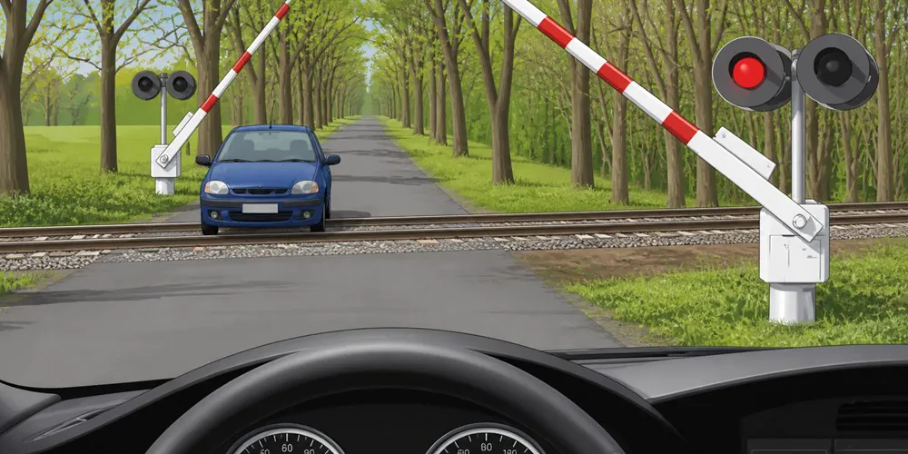
- Permitted if no train is approaching.
- Permitted if the barrier gate is open.
- Prohibited.
Answer: 3
78.PDF page 20 - g9-q078
What should the driver do in this situation?
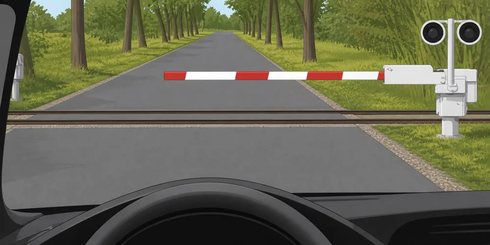
- If no train is approaching, go around the barrier gate and continue.
- Stop and wait for the barrier gate to open.
Answer: 2
79.PDF page 21 - g9-q079
In this situation, is it permitted to cross the railroad crossing?
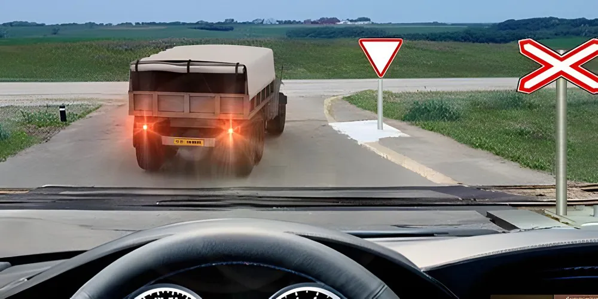
- Permitted if no train is approaching.
- Permitted.
- Prohibited.
Answer: 3
80.PDF page 21 - g9-q080
In this situation, is it permitted to cross the railroad crossing?
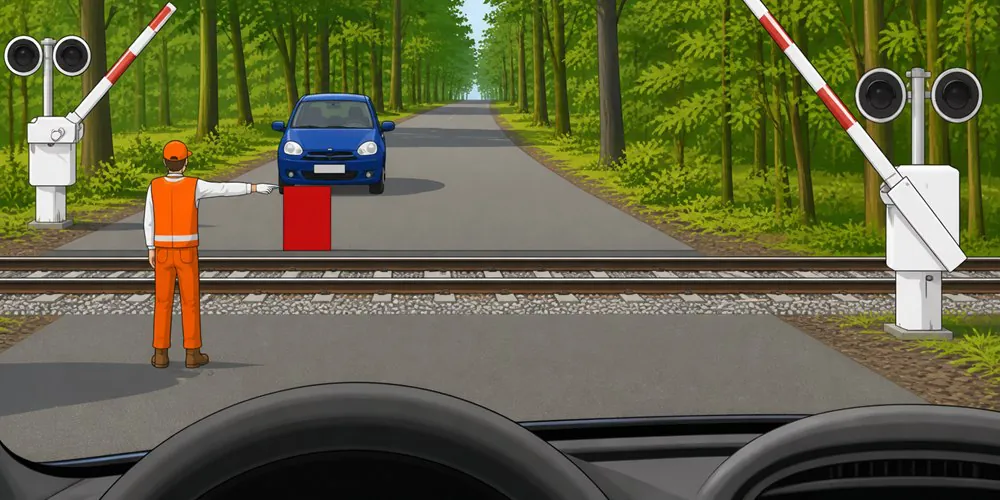
- Prohibited.
- Permitted if no train is approaching.
- Permitted because the railroad crossing attendant is prohibiting the oncoming vehicle from crossing.
Answer: 1
81.PDF page 22 - g9-q081
In this situation, where may passing be started?
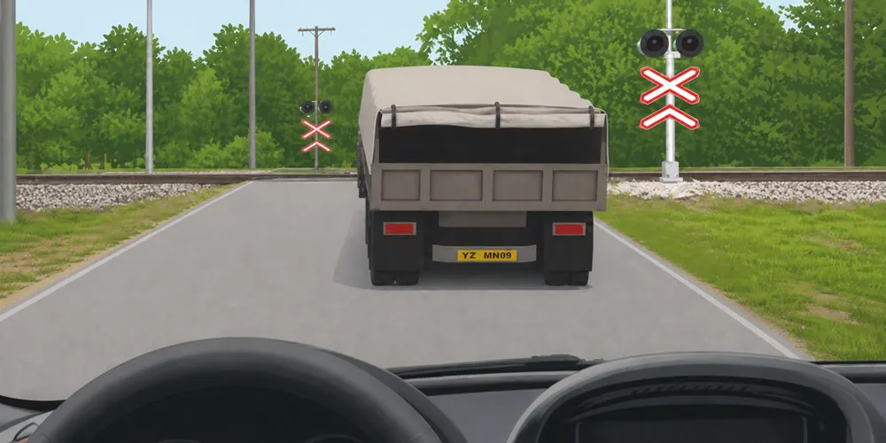
- At the railroad crossing.
- After crossing the railroad crossing.
- After proceeding 100 m beyond the railroad crossing.
Answer: 2
82.PDF page 22 - g9-q082
In this situation, is passing permitted?
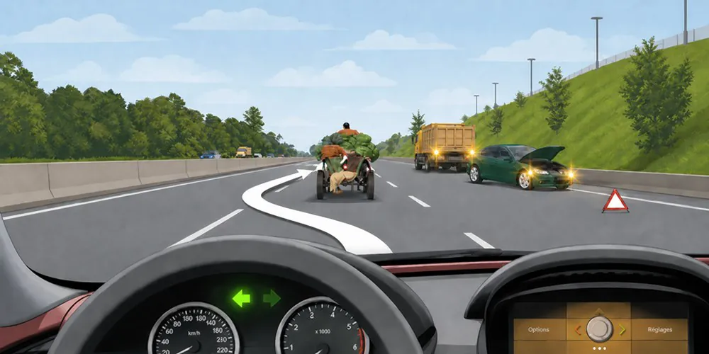
- Permitted because there is no oncoming vehicle.
- Prohibited.
- Permitted if the animal-drawn cart is moving at a speed below 30 km/h.
Answer: 2
83.PDF page 23 - g9-q083
What maneuver is the passenger-car driver performing?
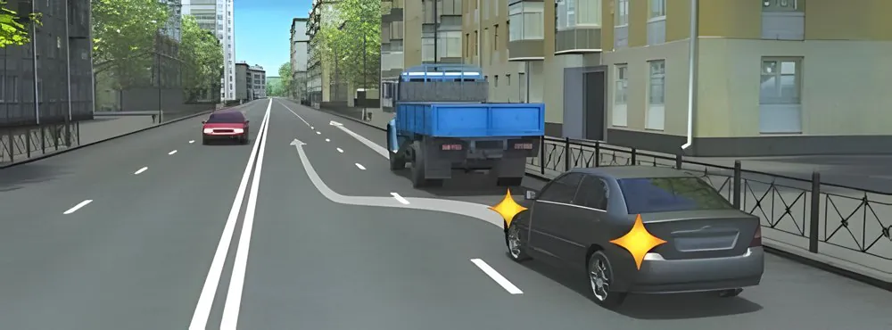
- Passing without leaving the lane.
- Passing.
- Driving around an obstruction.
Answer: 2
84.PDF page 23 - g9-q084
Is passing the motorcycle permitted?
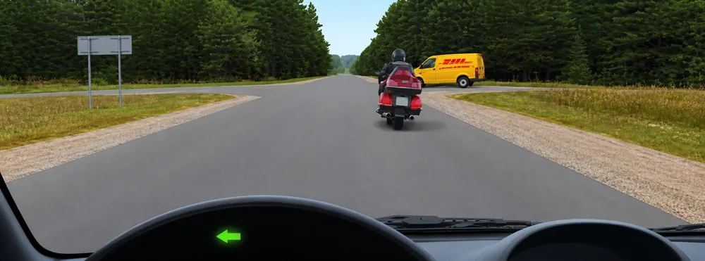
- Permitted.
- Prohibited.
Answer: 2
85.PDF page 23 - g9-q085
On a road with one lane in each direction, when is passing in the oncoming traffic lane permitted?
(no picture)
- Only when the oncoming traffic lane is clear for a sufficient distance.
- Only when no vehicle is passing us.
- Both conditions must be met.
Answer: 3
86.PDF page 24 - g9-q086
Is passing permitted in the indicated situation?
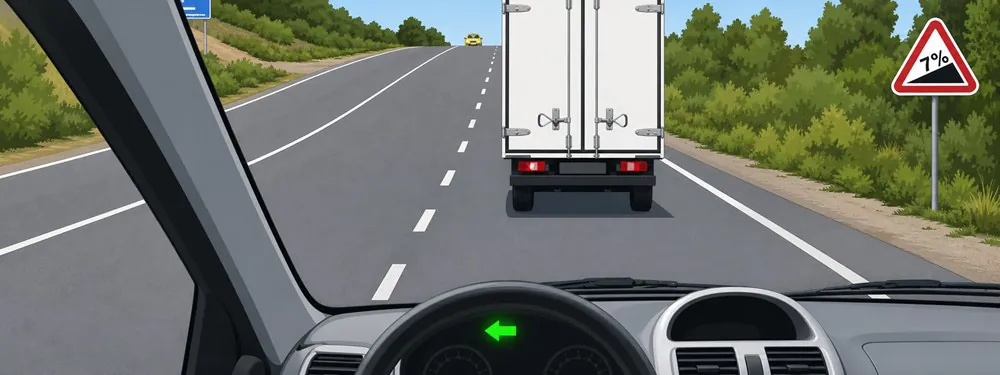
- Prohibited.
- Permitted if the maneuver can be completed within the visible section of the road.
- Permitted.
Answer: 3
87.PDF page 24 - g9-q087
Is passing the truck permitted?
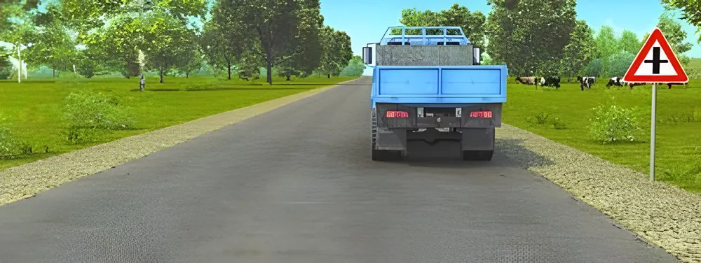
- Yes.
- Yes, if the passing maneuver is completed before the intersection.
- No.
Answer: 2
88.PDF page 24 - g9-q088
What is required of the driver of the vehicle being passed?
(no picture)
- The driver must yield to the passing vehicle.
- The driver must not interfere with the passing vehicle by increasing speed or by taking any other action.
Answer: 2
89.PDF page 25 - g9-q089
Is passing permitted in this situation?
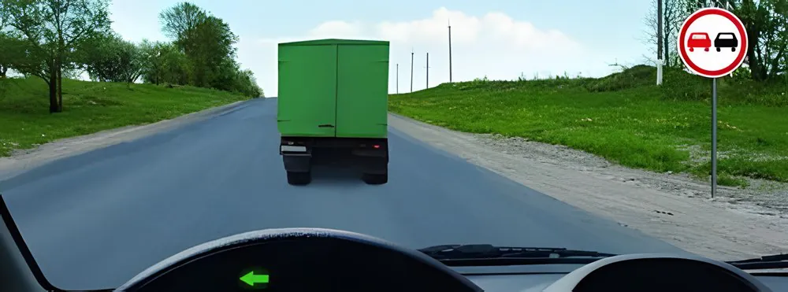
- Prohibited.
- Permitted if the truck is moving at less than 30 km/h.
- Permitted.
Answer: 1
90.PDF page 25 - g9-q090
Is the driver of a truck with a maximum authorized mass of 3 metric tons permitted to pass the tractor?
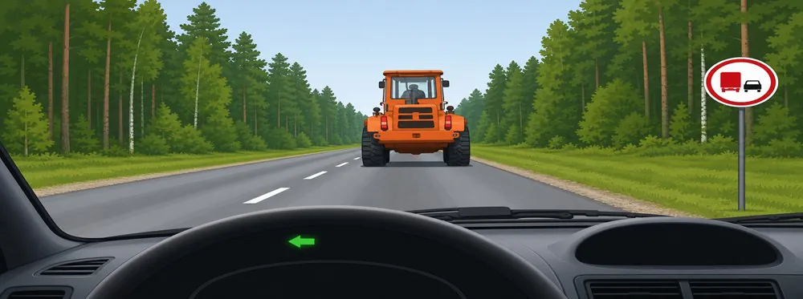
- Yes.
- Yes, if the tractor is moving at less than 30 km/h.
- No.
Answer: 1
91.PDF page 25 - g9-q091
If oncoming traffic is difficult in this situation, who must yield?
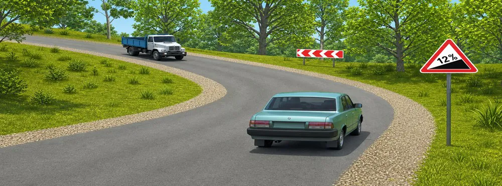
- The truck driver.
- The passenger-car driver.
Answer: 1
92.PDF page 26 - g9-q092
Passing at a pedestrian crossing is:
(no picture)
- Prohibited only when pedestrians are present.
- Prohibited.
- Permitted.
Answer: 2
93.PDF page 26 - g9-q093
Along which path is passing permitted?
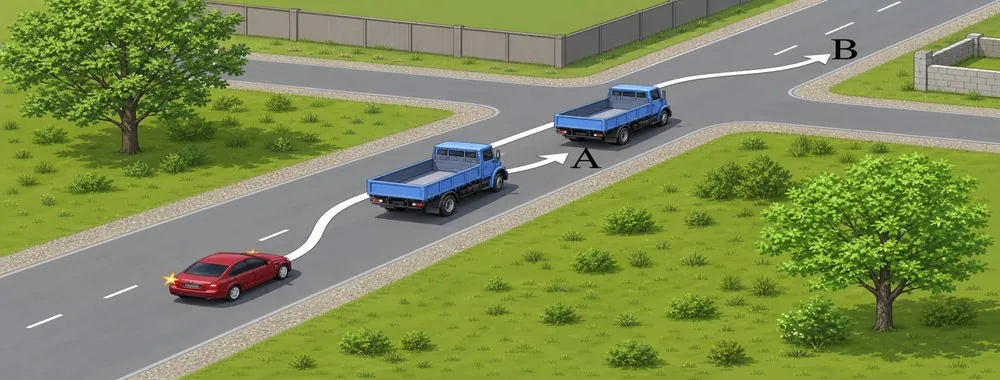
- Either path.
- Only A.
- Only B.
Answer: 2
94.PDF page 26 - g9-q094
What does the traffic sign indicate?
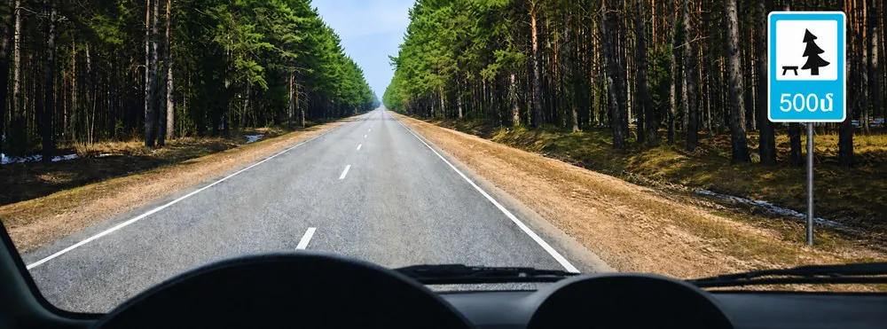
- There is a fallen tree 500 meters ahead.
- There is a rest area 500 meters ahead.
- There is a rest area along the next 500 meters.
Answer: 2
95.PDF page 27 - g9-q095
In this situation, is the driver required to activate the turn signal?
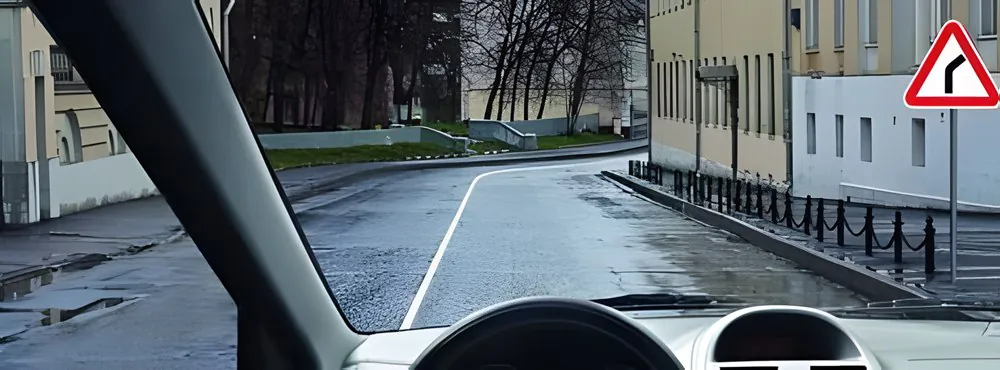
- Yes.
- Yes, if a vehicle is approaching from behind.
- No.
Answer: 3
96.PDF page 27 - g9-q096
By raising an arm, the driver indicates:
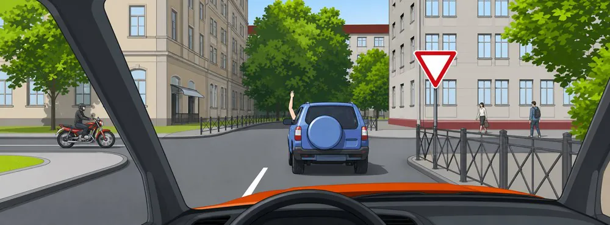
- An intention to make a left turn.
- An intention to proceed straight ahead.
- An intention to slow down.
Answer: 3
97.PDF page 27 - g9-q097
Giving a signal:
(no picture)
- Gives the driver the right-of-way over other road users.
- Does not give the driver the right-of-way over other road users.
- Gives the driver the right-of-way only when starting to move.
Answer: 2
98.PDF page 28 - g9-q098
When making a right turn while following the priority road, giving a turn signal is:
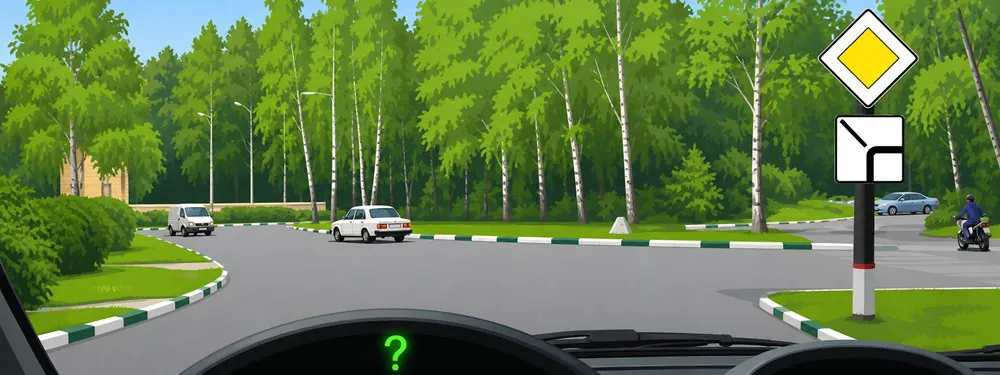
- Required.
- Required only at night.
- Not required.
Answer: 1
99.PDF page 28 - g9-q099
What is the driver of the motorcycle indicating?
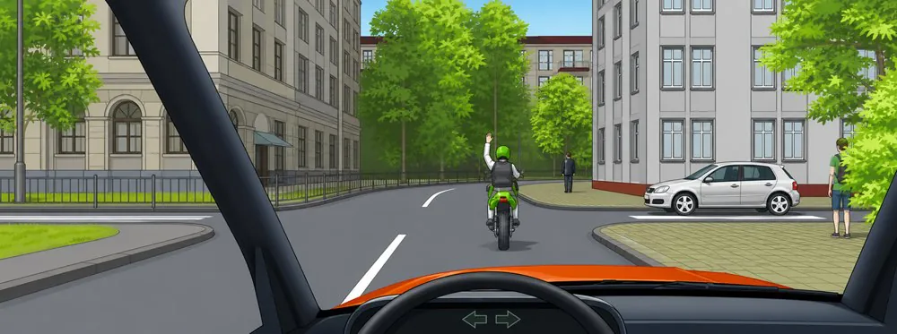
- An intention to continue straight ahead.
- An intention to make a left turn.
- An intention to slow down in order to yield to the passenger car.
Answer: 3
100.PDF page 28 - g9-q100
In this situation, when making a left turn, giving a turn signal is:
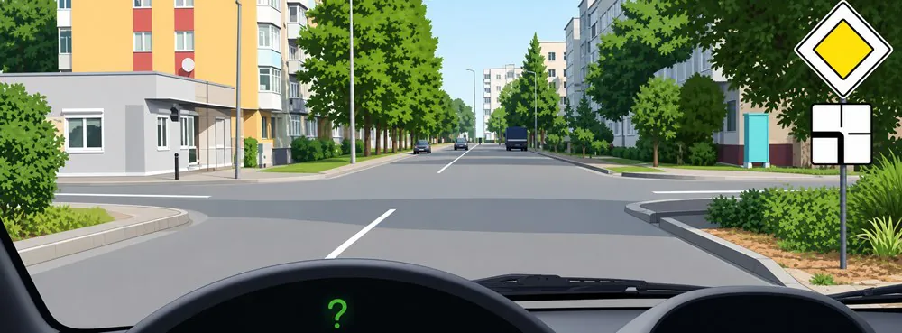
- Required.
- Not required.
Answer: 1
101.PDF page 29 - g9-q101
When passing, the left turn signal must be turned off:
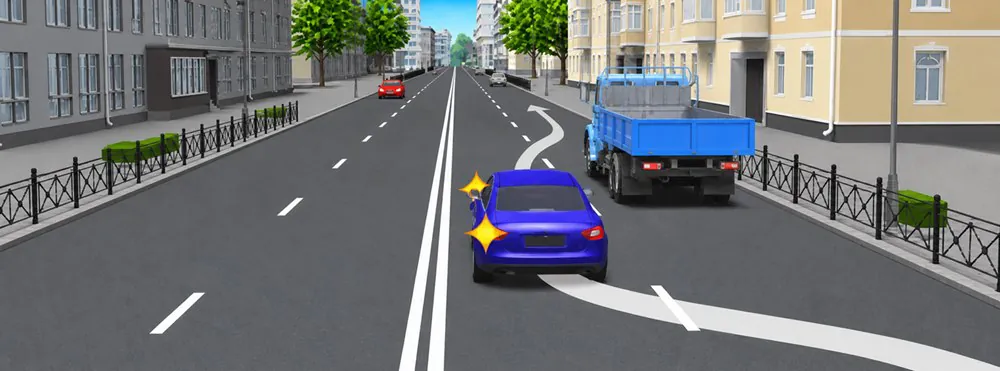
- Immediately after changing to the left lane.
- Only after proceeding ahead of the vehicle in front.
- At the driver’s discretion.
Answer: 1
102.PDF page 29 - g9-q102
When making a U-turn at this intersection, which turn signal must be activated?
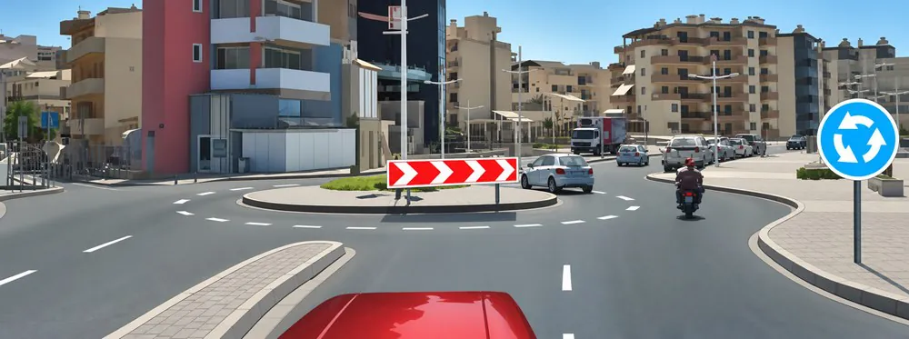
- Right.
- Left.
- Neither.
Answer: 1
103.PDF page 29 - g9-q103
In the indicated situation, must you give a turn signal?
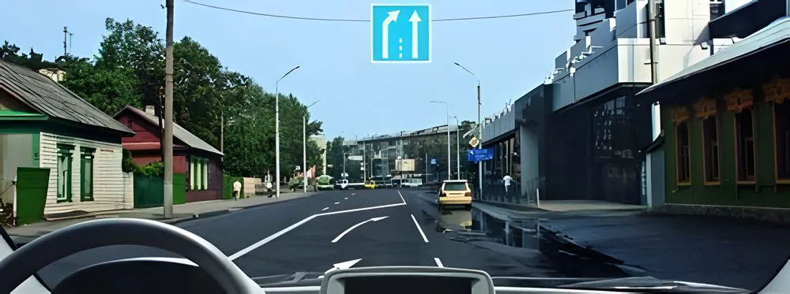
- Yes.
- No.
- Yes, if there is a driver proceeding in the right lane.
Answer: 1
104.PDF page 30 - g9-q104
What is the driver of the motorcycle indicating?
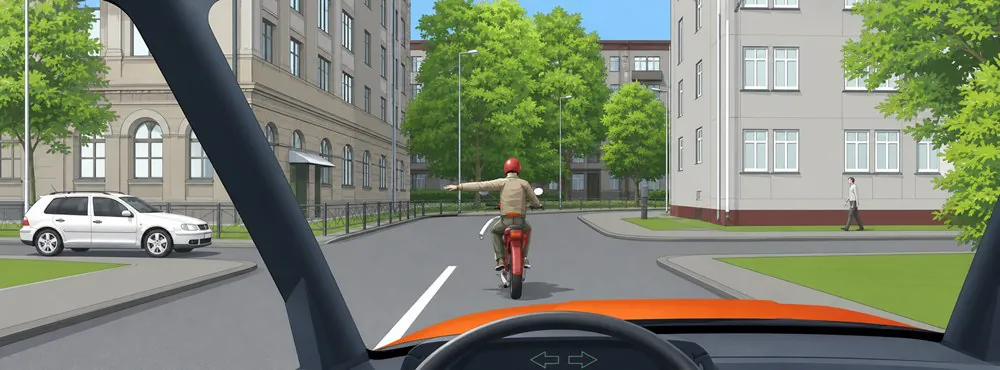
- An intention to continue straight ahead.
- An intention to make a right turn.
- An intention to make a left turn or U-turn.
Answer: 3
105.PDF page 30 - g9-q105
The turn signal must be canceled
(no picture)
- Immediately before the maneuver.
- Immediately after the maneuver.
- During the maneuver.
Answer: 2
106.PDF page 30 - g9-q106
In the indicated situation, giving a turn signal is:
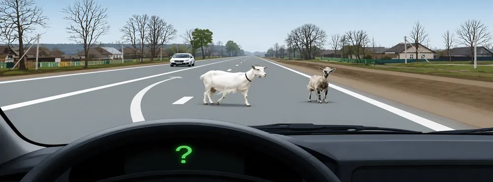
- Required.
- At the driver’s discretion.
Answer: 1
107.PDF page 31 - g9-q107
Which driver is giving a right-turn signal?
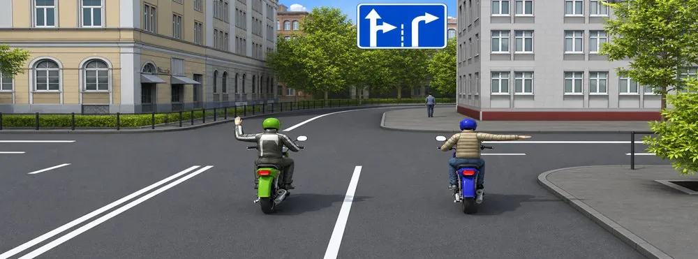
- Only the driver on the right.
- Both drivers.
- Only the driver on the left.
Answer: 2
108.PDF page 31 - g9-q108
When maneuvering in parking areas or at gas stations, you:
(no picture)
- Must use the turn signal.
- Are not required to use the turn signal.
Answer: 1
109.PDF page 31 - g9-q109
In this situation, what can the driver’s outstretched arm indicate?
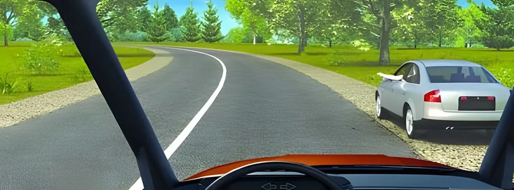
- An intention to start moving.
- An intention to stop.
- A general emergency signal.
Answer: 1
110.PDF page 32 - g9-q110
Which turn signals must you use when making a U-turn along the indicated path?
- Right.
- Left.
- First right, then left.
Answer: 3
111.PDF page 32 - g9-q111
If you intend to stop immediately after the intersection, when should you activate the right turn signal so as not to mislead other road users?
- In advance, before the intersection.
- After entering the intersection.
Answer: 2
112.PDF page 32 - g9-q112
When changing back into the lane proceeding in the same direction after completing a passing maneuver, does the driver have the right-of-way over a driver already proceeding in that lane?
- No.
- Yes.
Answer: 1
113.PDF page 33 - g9-q113
Must we yield to a driver exiting an adjacent area with flashing beacons and a special audible signal activated?
- No.
- Yes.
Answer: 2
114.PDF page 33 - g9-q114
When proceeding straight through the intersection, must we yield to the driver of the truck with flashing yellow beacons activated?
- Yes.
- No.
Answer: 2
115.PDF page 33 - g9-q115
In this situation, to whom must you yield?
- The driver of the motorcycle.
- The driver of the automobile with special light and audible signals activated.
- Both drivers.
Answer: 3
116.PDF page 34 - g9-q116
We must yield to:
- Both drivers.
- The driver of the truck with a flashing yellow beacon.
- Only the bus driver.
Answer: 3
117.PDF page 34 - g9-q117
In this situation:
- You will proceed through the intersection first.
- You must yield to the driver approaching from the left.
Answer: 2
118.PDF page 34 - g9-q118
We must yield to:
- Everyone.
- The driver of the police automobile.
- No one.
Answer: 2
119.PDF page 35 - g9-q119
When making a left turn:
- You will proceed through the intersection first.
- You will yield only to the driver of the police automobile.
- You will yield to all drivers.
Answer: 3